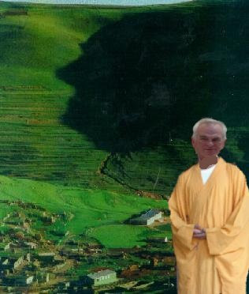
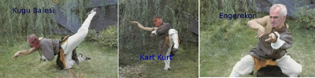

Tapınak rahatsız
Bir habercilik başarısına imza atan Üçüncü Dalga Geliyor Blog, Damal Tapınağı adlı bir yapılanma hakkında bazı bilgileri kamuoyu ile paylaşmıştı. Muhabirimiz tekrar tapınağa sızmayı başardı ve çok önemli yeni bilgiler ele geçirdi. Tapınağın son zamanlarda çok rahatsız olduğu öğrenildi. Ölümcül Damal-Fu savaş sanatının yaşayan en üst büyük ustası ulu Önder Sav, son konjenktürden çok rahatsız olduğunu tapınaktaki rahiplere anlatıyor. Tapınak, daha önce kapatma davası, halkın kapatılması gibi projelere imza atmıştı. Büyük usta Sıfu Sav en son olarak Kürt açılımıni hedef tahtasına aldı, öğrencilerine "açılımın kapatılması" emrini verdi.

Sıfu Sav ölümcül Damal-Fu sanatının şimdiye kadar hiç öğretilmemiş bazı tekniklerini de öğretmeye başladı. Bu teknikler yüzyıllarca gizli tutulmuştu, fakat son durumun açılıyeti sebebiyle teknikler şu yüzüne çıktı. Altta ulu Önder Sav bu teknikleri uygularken görüyoruz.

İlk teknik Kuğu Balesi uygulanırken rakip güldürülüyor, sonra Kart Kurt ile şaşkınlığa uğratılıyor. En son darbe "Engerekon" ile rakip etkisiz hale getiriliyor.
Üçüncü Dalga Geliyor Blog.
"İlk bilen siz olun"